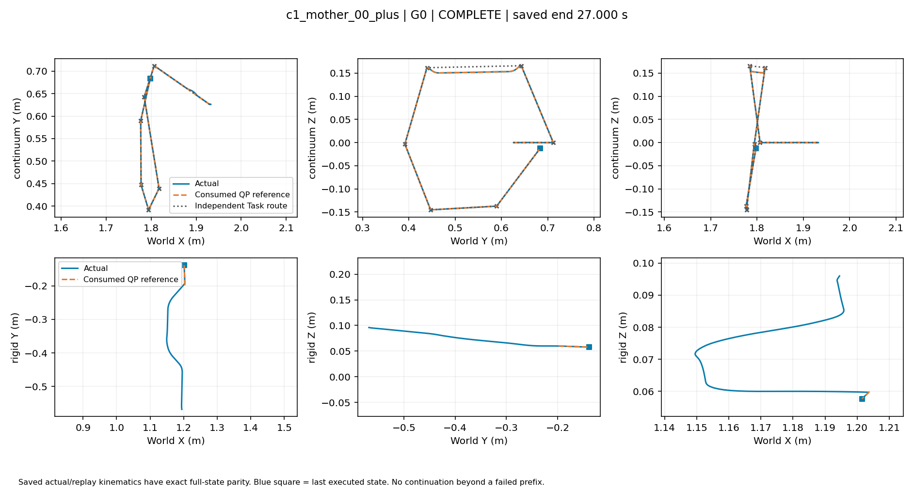
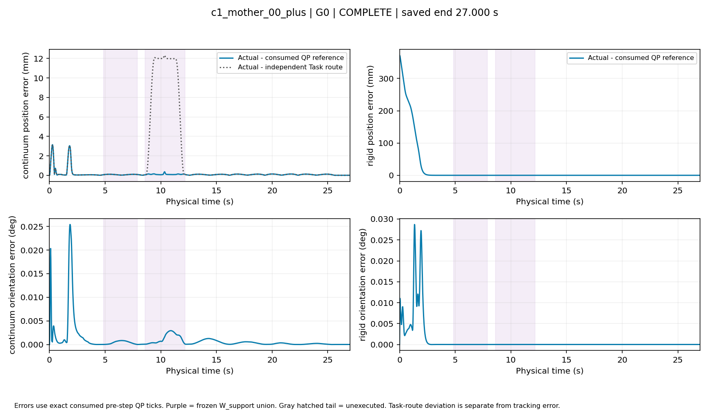
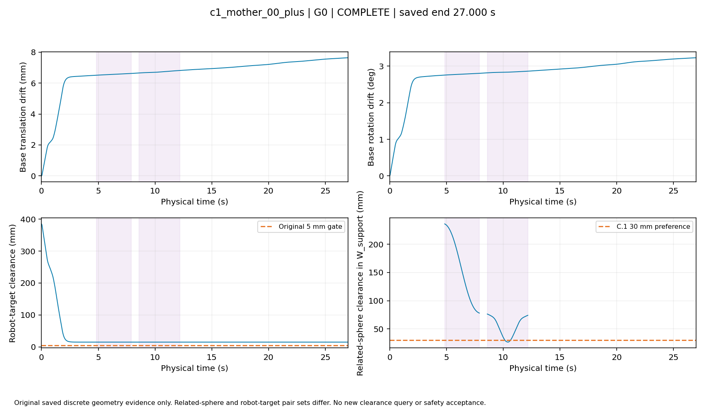
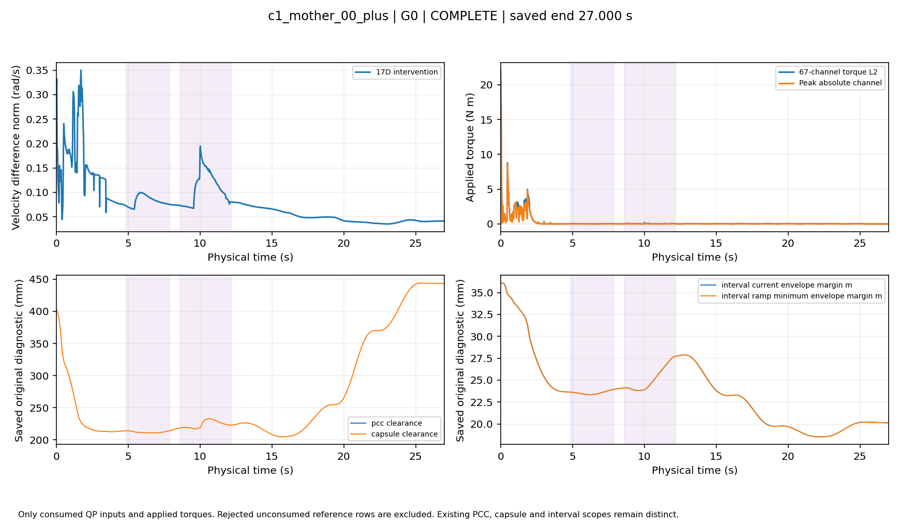

返回全部16槽
c1_mother_00_plus · G0
TASK_COMPLETED · 独立实际轨迹
保存终点 27.000s；完整27秒。来源与帧时序
五视角合成
连续体侧视 / 聚焦
单独视角：overview · front · side · top · iso
双臂末端轨迹

位置与姿态跟踪误差

净空及基座漂移

干预、力矩及原有诊断

数值下载：consumed_tracking.csv · native_diagnostics.csv · support_clearance.csv